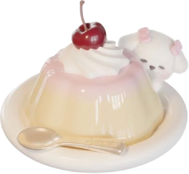

 Hello! I'm Morita! I'm an art student and 18-year-old freelance artist from Argentina. I am fluent in both Spanish and English.
My creative approach covers various disciplines, from digital illustration to traditional art, always seeking to capture the unique essence of each drawing I make. I consider myself an enthusiastic, passionate person, always looking for new experiences that expand my creative paths! 
I have been selling my illustrations for 4 years, when I decided to open myself to the public with high expectations.
Through my art, I seek not only to communicate emotions, but also to connect with other people and capture their attention.
I specialize in offering personalized pieces that adapt to the needs of each client, with a style that is capable of being eye-catching.
In addition, I am dedicated to making adopts that I usually upload to my networks, as well as my own art.
Always willing to take on new challenges, my goal is to continue growing as an artist and earn the affection of every person who wants to work with me...
 Colors: Beige
Colors: Beige
 Animals: Cats!!
Animals: Cats!!
Food: Milanesa
Drink: Pepsi
Passtimes: Drawing, painting, doing crafts and learning about makeup!
 Song: -----
Song: -----
I met Skye a short time ago and we became friends, and they decided to gift me this website and work with me! Since then, this website started to be developed by Skye for me. I really appreciate her effort to create a cozy and tender corner for me on the internet. Douce Framboise Cafe started as a sweet project from an adorable French cafe, and so far the results have been lovely! ^^
It is truly a pleasure to have you here. In this space, you can learn more about my identity, artistic journey, explore my work, and discover the projects I have created with dedication and love. If you have any questions or wish to get in touch, feel free to reach out through my social media. I hope your visit is warm and that you find what you're looking for!! Sincerely,
Morita. 

 About Douce Framboise Cafe
About Douce Framboise Cafe